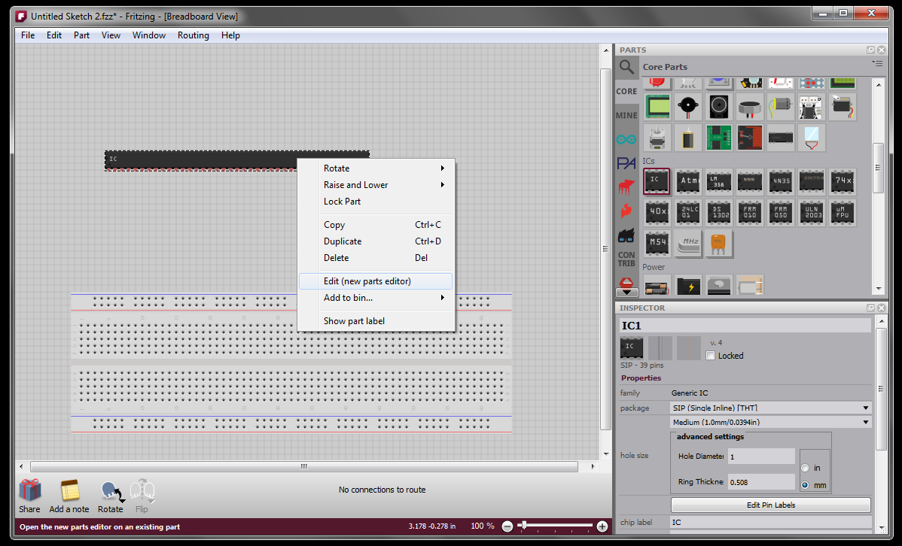
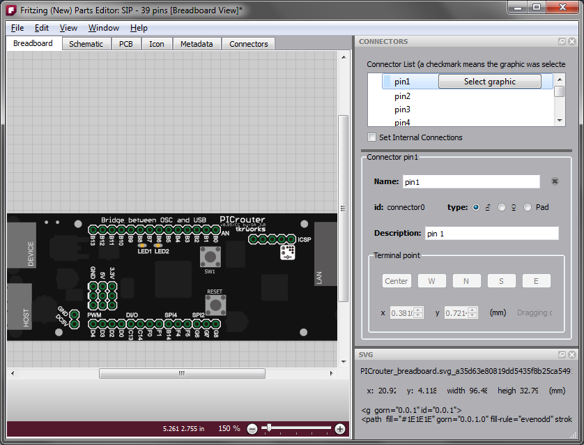
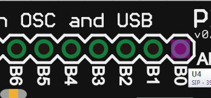
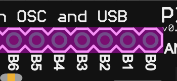
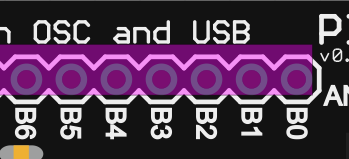
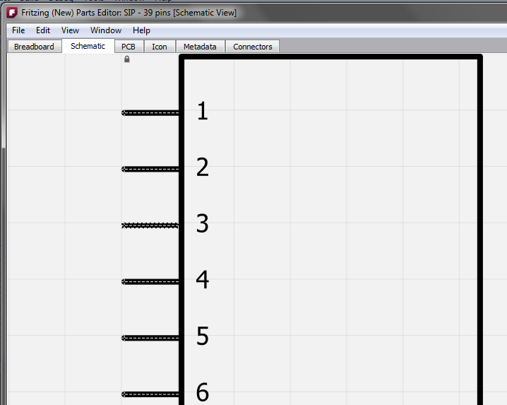
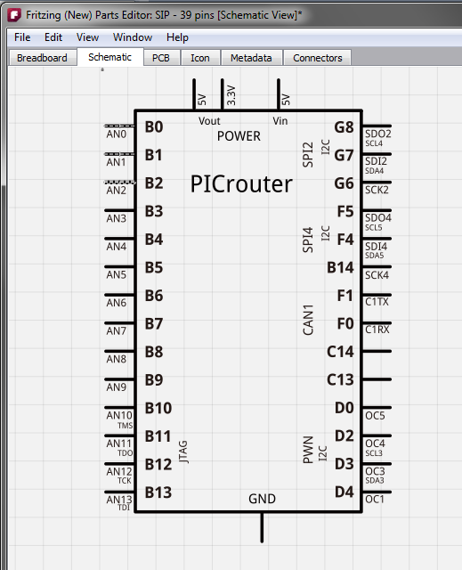
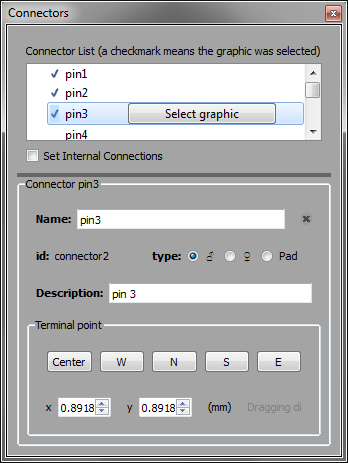
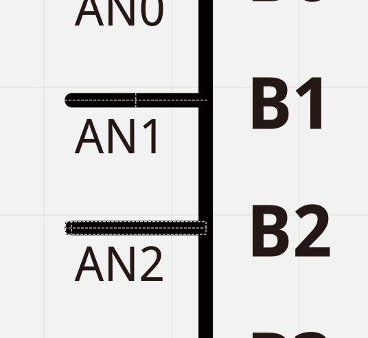
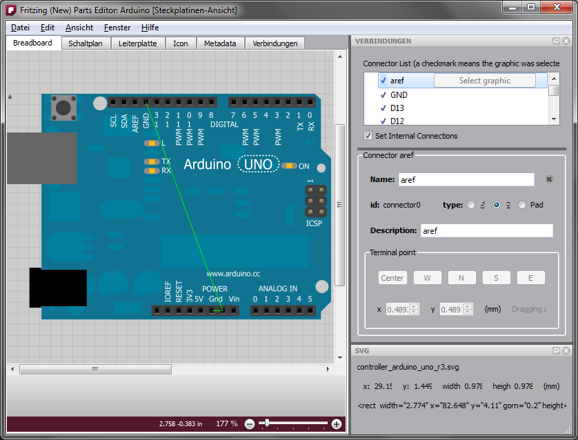

We have decided to release the new Parts Editor in two phases. The first phase, included in release 0.7.9, is already easier to use and more powerful than the old Parts Editor, but you still have to do a lot of preliminary work using an SVG editor like Inkscape, Illustrator, or CorelDRAW. In the next phase we hope to eliminate much of the need to use these programs.
How to start
The new approach is very different from that of the old Parts Editor, and explaining that difference is the purpose of this document. The first big change is that you cannot create a new part from scratch--you must begin with a part that already exists. So the best thing to do is to find a part that is pretty close to what you eventually want. If your part is really different from anything else, then just to try to match the number of connectors. For example, if your part needs 39 pins, then start with a generic IC part, change it to a SIP (single inline package) and give it 39 pins. Though finding a part to begin with may seem like a burden, it will save you effort as you go through the process.
You can open the new parts editor by right-clicking a part in a sketch and choosing the 'Edit' option; choosing 'Edit' from the Part menu; right clicking a part in the Parts Bin and choosing the 'Edit' option; or using the Parts Bin drop down menu.
Six views
The new Parts Editor no longer tries to display everything in a single view. Instead, it works like the sketch window which has multiple tabs with only one tab visible at a time. In the new Parts Editor there are six tabs: Breadboard view, Schematic view, PCB view, Icon view, Metadata view, and Connectors view. As you might expect, the first four views are for the part images; the Metadata view is where you enter the part's title, author, and other properties; and the Connectors view is for editing connector metadata, and for adding or removing connectors. For the latter, you just type in the number of connectors you want.
Loading new images
To load the SVGs for your part, switch to the appropriate view, and use File > Load image for view. As before, you can load SVGs in all views and gEDA .fp files and KICAD .mod files in PCB view only. To create an SVG for any view, you must use an external SVG editor (Inkscape, Illustrator, CorelDRAW, or a text editor) to layout the elements that will be used as connectors. The SVG example below uses <circle> elements for connectors.
Loading PNG or JPG images directly is possible, but since these become SVG images with only a single element, there is no way to place individual connectors. We also discourage the use of PNG and JPG because these are raster-based rather than vector-based, so they don't look good when scaled. If you still prefer to use PNG or JPG, we recommend that for now you open them in an external SVG editor and add connector elements there (see below for more about 'connector elements'). Save the result as an SVG, and use that in the Parts Editor. In phase 2 you will be able to add connector elements directly in the Parts Editor.
Since you have already begun with a part, it may be that you will only have to load a single image for a particular view--you do not have to replace all the images in the original part.
It is still necessary to prepare SVGs for PCB view by grouping elements in layers: copper0, silkscreen, copper1, etc. (Layering will be handled in the phase 2 parts editor.) The best way to understand the layers is to open up one of the core pcb svg files, For example have a look at the file crystal_hc49U.svg. Silkscreen layer has four while lines, the two copper layers share a pair of circles as connector elements.
<?xml version="1.0" encoding="UTF-8"?>
<svg baseProfile="tiny" height="0.20306in" version="1.2" viewBox="0 0 46684 20306" width="0.46684in" xmlns="http://www.w3.org/2000/svg">
<desc>Fritzing footprint SVG</desc></svg>
<g id="silkscreen">
<line stroke="white" stroke-width="1000" x1="1000" x2="45684" y1="1000" y2="1000"/></g>
<line stroke="white" stroke-width="1000" x1="45684" x2="45684" y1="1000" y2="19306"/>
<line stroke="white" stroke-width="1000" x1="45684" x2="1000" y1="19306" y2="19306"/>
<line stroke="white" stroke-width="1000" x1="1000" x2="1000" y1="19306" y2="1000"/>
<g id="copper1"><g id="copper0">
<circle cx="13736" cy="10153" fill="none" id="connector0pin" r="2750" stroke="rgb(255, 191, 0)" stroke-width="2000"/></g></g>
<circle cx="32948" cy="10153" fill="none" id="connector1pin" r="2750" stroke="rgb(255, 191, 0)" stroke-width="2000"/>
Sometimes you will want to reuse the breadboard image as your icon image. There is a shortcut for this under File > Reuse breadboard image. You can also find the options: File > Reuse schematic image, and File > Reuse PCB image.
For certain parts--like a breadboard--there is only one view image. For technical reasons, you have to tell the Parts Editor this is what you want. Use View > Make only this view visible from the current view (one of Breadboard, Schematic, or PCB) to make the part invisible in the other two views.
Undo, save, show in folder
The next big difference from the old Parts Editor is that undo is always available, even after loading view images. Furthermore, you can save your changes at any point and keep working--the new Parts Editor is less like a dialog and more like a full document window.
If you start with a core part (i.e. a part from the Fritzing distro), saving from the Parts Editor is disabled. You must use Save as new part, because you cannot change a core part. Save as new part creates a new part in your local storage area (explained below) and this part is added to the "My Parts" Bin--it is a copy of the original part (plus whatever changes you have already made so far using the Parts Editor). If you are editing a custom part that was in a sketch, the part will be updated whenever you save. If you want the new part to display in the My Parts Bin the next time you run Fritzing, remember to save the bin (use the drop down menu at the upper left of the bin). If you start editing from a part in the My Parts Bin you have a choice between Save (which will overwrite the part), and Save As New Part (which will create a new part and add it to the My Parts Bin). If you copy a part into My Parts Bin from some other bin, then probably Save will be disabled.
On Windows the local storage folder is something like C:\Users\[username]\AppData\Roaming\Fritzing\parts\user\, and SVGs are stored in C:\Users\[username]\AppData\Roaming\Fritzing\parts\svg\user\. On Linux and Mac this would be ~/.config/Fritzing/parts/user/ and ~/.config/Fritzing/parts/svg/user/.
To find the SVG image for the current view on the desktop, choose File > Show in Folder. On Mac and Windows this will open a folder on your desktop with the SVG file selected. Under Linux you get the folder but no file selection (if anyone has advice about how to get selection to work, we would be grateful).
Associating a connector with its SVG counterpart
The next task will be to associate each connector with its counterpart in the SVG for each view. This is handled very differently from before. For an example, I am going to use images from a part created by Shunichi Yamamoto (who graciously gave us permission to include them in this tutorial, and who also helped beta test the new Parts Editor).
The new part will have 39 pins, so we begin with a Generic IC part and drag it into an empty sketch. There we use the Inspector to change it a to SIP and give it 39 pins. Then we open that in the new Parts Editor with a right-click.

Next we load the new breadboard image using File > Load image for view. In the Tools widget at the upper right, you see a list of connectors. Choose one to make it the current or active connector. If it has already been associated with an SVG element, that element will display a marquee highlight. Since we are just starting out, we will choose pin1 which is not currently associated with any SVG element.

To create the actual association click the "Select graphic" button over in the Connectors widget. This basically puts you in a "mode" that lasts until the next time you mouse down. If you want to escape the mode, click anywhere outside the part or use the escape key. You can only make the association when you are in this mode (this keeps you from accidentally associating a connector to a graphic when you didn't intend to).
In the mode, move your mouse over the SVG. As you do so, different SVG elements will highlight. It is often the case that any given mouse location can refer to multiple SVG elements (or groups of elements). Use the shift-key plus the mouse wheel to highlight other elements above or beneath the currently highlighted one (in the z-order)--the mouse wheel without the shift key will pan or zoom as usual (depending on your preferences setting for wheel events). If you are already on the bottom layer then the next wheel "downward" will make the element flash white; a similar white flash will occur if you are already at the top layer and wheel "upward". In other words, the flash signifies you can't move any further in the z-order in that direction.
Here are three highlights from the same mouse position, using the mouse wheel + shift:



The first highlight is the one we want so we mouse down when the wheel gets us back to that small rectangle. Now the element has a marquee to show that it is the current pin, and you also see the terminal point as a crosshair which defaults to the center. The terminal point is the place where a wire attaches to the connector.

After associating pin2 and pin3 we have:

Adjusting terminal points
In PCB and Breadboard view the terminal point is usually the center of the connector so you don't have to do any thing else. But in schematic view the terminal point is usually near the end of the connector. So let's go to schematic view. We start with the original SVG image. Note how the connectors are already showing their anchor points. Pin3 is the current connector.

Now we load the new schematic image and start associating pins.

Here is what the Connectors widget looks like with pin3 as the current connector:

Notice that since we have selected graphics for three of the connectors, those connectors are checked in the connector list.
You can use the buttons or spinners to adjust the terminal point. Here is a close up after hitting the W button, and clicking the X spinner twice (look at the pin marked 'AN2'):

You can also drag the terminal point directly by mousing down on it when its SVG element is highlighted.
Setting internal connections
An internal connection is when a two or more connectors in a part are already connected, for example the GND connectors on the Arduino UNO. You can specify and edit internal connections by clicking on the "Set internal connections" checkbox in the Connectors widget--it's beneath the connectors list (you can see it in the image of the Connectors widget, above). Since we are talking about the Arduino UNO, here is what it looks like when Set internal connections is checked:

The green lines represent the internal connections. To remove an internal connection, right-click the line and choose "Remove internal connection". To add a new connection, just drag a line out from one connector to another.
Known limitations
The following feature are due in phase two:
- adding holes
- mixing THT and SMD connectors--for now you must start with
an SMD part to create a new SMD part, and start with a
through-hole part to create a new through-hole part.
- control over SVG element layering
- direct manipulation of SVG elements
- setting up parts with bendable legs.
Bye for now
That's pretty much the phase one story. We hope you like what you've seen. Stay tuned for phase two.